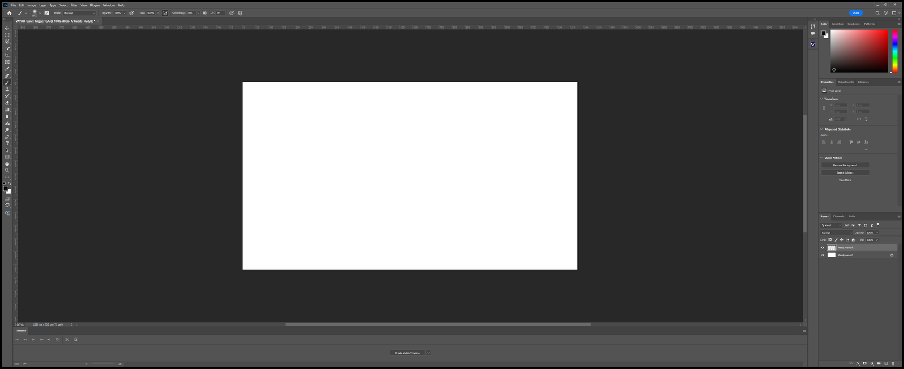

Fuzzy, Prefix & Alias Search
Search by full command name, partial abbreviations (gblr → Gaussian Blur, usm → Unsharp Mask, crv → Curves), category keywords, or related editing intent.
Quiet Trigger brings instant fuzzy search, bilingual English & Persian command lookup, customizable visual themes, and a silent floating Windows companion directly to Adobe Photoshop.
Everything runs locally inside Adobe Photoshop's UXP engine and your workstation's loopback companion — zero cloud lag.
Search by full command name, partial abbreviations (gblr → Gaussian Blur, usm → Unsharp Mask, crv → Curves), category keywords, or related editing intent.
Native Persian (Farsi) alias mapping lets bilingual designers search commands directly in Persian (بلور, ماسک, کراپ, منحنی) without switching terminology.
Star frequently used filters, adjustments, or layer operations for boosted ranking and one-click access in both the UXP panel and Windows floating palette.
Detects whether a document is open, checks active layer lock state and layer kind (Pixel, Smart Object, Text), and prompts before destructive actions such as Delete Layer, Merge, Rasterize, or Crop.
Rename the active Photoshop layer directly inside the command palette without clicking into the Layers panel.
Covers Tools (19), Filters (17), Adjustments (15), Layers (14), Document (11), Selections (10), View (7), and Export (5) — with 92 live-verified PASS and 6 documented interactive GPU/Sensei limitations.
When installed via the Complete Windows Installer (.exe), Quiet Trigger runs a lightweight native WinExe tray helper (QuietTriggerHelper.exe) that supervises a bundled portable Node.js loopback bridge.
Ctrl+Alt+Space, Ctrl+Shift+Space, or Ctrl+Space (includes explicit warning about Photoshop's Zoom In shortcut).
Every theme change synchronizes immediately over the authenticated local bridge between the Photoshop UXP panel and the Windows floating palette.
| Preset | Palette Direction | Primary | Secondary | Tertiary | Background | Surface |
|---|---|---|---|---|---|---|
| Aurora (default) | Blue · Violet · Pink | #4EA5FF | #8B5CF6 | #EC69B9 | #111522 | #191E2D |
| Ember | Crimson · Orange · Amber | #FF454F | #FF813D | #FFC05A | #1D1417 | #271A1D |
| Crimson | Deep Red · Rose · Coral | #E83E5B | #FF5E7A | #FF9B8A | #191318 | #251A22 |
| Arctic | Cyan · Blue · Indigo | #18D4E8 | #369EFF | #7878FF | #101921 | #17232D |
| Emerald | Emerald · Mint · Teal | #00B88A | #2BD4AA | #86D9A7 | #111B19 | #182521 |
| Monochrome | White · Silver · Graphite | #E8EAF0 | #AEB4C0 | #747C8B | #141519 | #202126 |
Edit Primary, Secondary, Tertiary, Glow, Background, Surface, Selected, and Border colors using #RRGGBB / #RGB inputs or quick swatches.
Select Solid, 2-Color, or 3-Color gradients (Horizontal, Diagonal, Vertical), Glow intensity (Off/Low/Medium/High), and Frosted, Translucent, Solid, or Flat surfaces.
Tune floating opacity (0.72–1.00), corner radius (12–24px), UI density (Compact, Comfortable, Spacious), Dark/Light/Auto appearance, and save up to 12 custom themes.
Real workspace capture showing Quiet Trigger installed natively as an Adobe Photoshop UXP Manifest v5 plugin alongside the native Photoshop toolbar.
